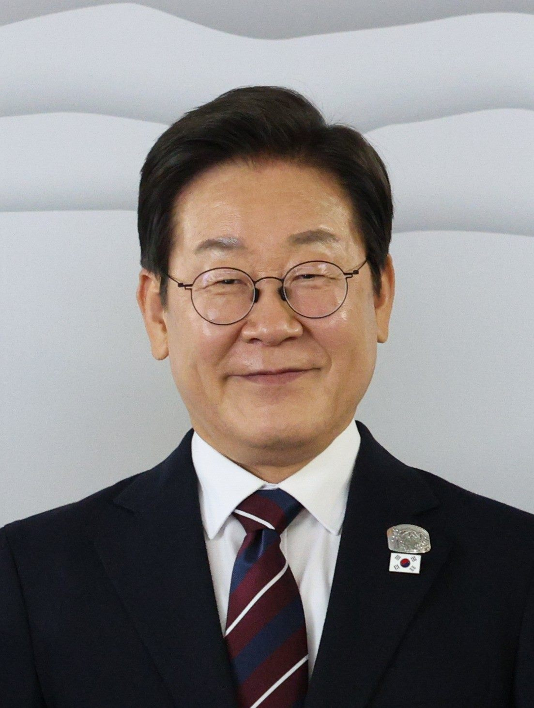

루비오, 레바논 대통령과 회담… “평화 노력 높이 평가”
미국 국무장관이 레바논 대통령과 회담하고 레바논의 평화 노력을 높이 평가했다고 자유시보가 전했다. 중동의 긴장 국면에서 외교적 대화의 통로가 이어지고 있다.
양념자 기자 · 2026.07.20
橋국제

보도에 따르면 양측은 회담에서 지역 안정과 재건, 국경 지역의 긴장 완화 방안을 논의했다. 미국 측은 레바논이 안정과 평화를 위해 기울이는 노력을 지지한다는 입장을 밝혔다.
광고 문의 · 300×250레바논은 오랜 경제 위기와 주변국 정세의 영향 속에서 어려움을 겪어 왔다. 대외 관계의 안정과 국제사회의 지원은 재건과 민생 회복의 중요한 조건으로 꼽힌다.
중동 전역의 긴장이 이어지는 가운데, 무력이 아닌 외교와 대화를 통한 해법을 모색하는 움직임은 그 자체로 의미가 있다. 다만 구체적 성과는 후속 협의와 이행에 달려 있다.
華橋時報는 국제 외교 사안을 특정 편의 입장이 아니라 지역 안정이라는 관점에서 전한다. 대화의 통로가 유지되는 것은 그 지역에 뿌리내린 이주민과 상인, 그리고 평범한 주민의 삶에 직접적인 영향을 준다.
출처·참고 (사실 확인용 — 본문은 직접 재작성)
· 自由時報 (ltn.com.tw)
· 自由時報 (ltn.com.tw)